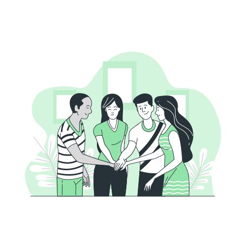

Join thousands of volunteers and citizens working together to improve roads, sanitation, public spaces, water management, and civic infrastructure across our communities.

Choose a community initiative that matches your interest.
Participate in neighborhood cleanliness and waste management initiatives.
Help create greener public spaces through plantation campaigns.
Support awareness campaigns for safer roads and pedestrian zones.
Promote responsible water usage and conservation awareness programs.
Join local events and contribute to civic improvement activities.
Join volunteers to clean and restore the lake surroundings.
Help plant native trees and improve green coverage in public spaces.
Spread awareness about road safety, traffic discipline, and pedestrian rights.
Meet the volunteers helping coordinate civic initiatives across different areas.
Cleanliness Coordinator
Road Safety Volunteer
Environmental Program Lead
Together we are creating measurable improvements across our city.
Active Volunteers
Community Events
Issues Reported
Issues Resolved
Join local initiatives, participate in events, and help improve civic infrastructure in your neighborhood.
Hear from community members making a difference.
“Participating in local cleanup drives helped us improve our neighborhood and build stronger community relationships.”
“Civic Connect made it easy to collaborate with volunteers and local authorities for meaningful civic improvements.”
“Our plantation campaign transformed an unused public space into a green community area within a few months.”